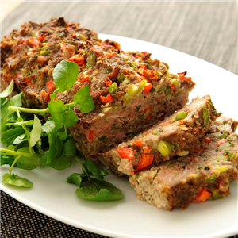

voorgerecht
hoofdgerecht
nagerecht
Gehaktbrood
Lekkere gehaktbrood om ervan te smullen. Ervaar deze smaak nu ook door mee te doen met onze gemakkelijke en snelle recepten speciaal voor jou.
Ingrediënten
- 1 ui
- 1 rode paprika
- 1 teentje knoflook
- 1 blikje tomatenpuree (ongeveer 70 gram)
- 3 eieren
- 1 theelepel chilipoeder
- 450 gram gehakt (wij gebruiken mager rundergehakt)
- 150 gram paneermeel
Bereidingswijze
- Verwarm de oven voor op 175 graden.
- Bekleed een cakevorm met bakpapier (geen cakevorm? bekleed dan een bakplaat met bakpapier).
- Snipper de ui en snijd de paprika fijn.
- Pers de knoflook en vermaal dit samen met de stukjes ui en paprika, de tomatenpuree, het chilipoeder, en een flinke snuf peper en zout in de keukenmachine.
- Klop de eieren los, meng goed door de puree heen.
- Kneed nu de gehakt samen met het paneermeel door het mengsel.
- Schept de gehakt in de cakevorm, duw goed aan (of; kneed het deeg stevig tot een broodvorm op de bakplaat), zet 45 minuten in de oven.
